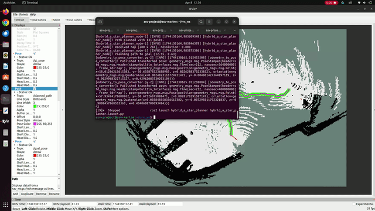

Hybrid A* Global Planner for an Autonomous Surface Vessel
Team project. I owned the global planner; teammates handled integration and field testing on the vessel.
A kinematically feasible global planner for a boat with a large turning radius. The search runs in (x, y, θ) and connects nodes with Reeds-Shepp curves, so every path segment is drivable. My planner code was used on the lab's vessel as a standalone ROS 2 node.
- Hybrid A* search with 72 heading bins (5°) and 11 steering directions per expansion
- Reeds-Shepp motion via OMPL, with collision checking sampled along each curve
- Shot-to-goal analytic expansion at every node, which ends the search early in open water
- PointCloud2 costmap layer that projects 3D sensor data into the planning grid
- Also wrapped the planner as a Nav2 global planner plugin